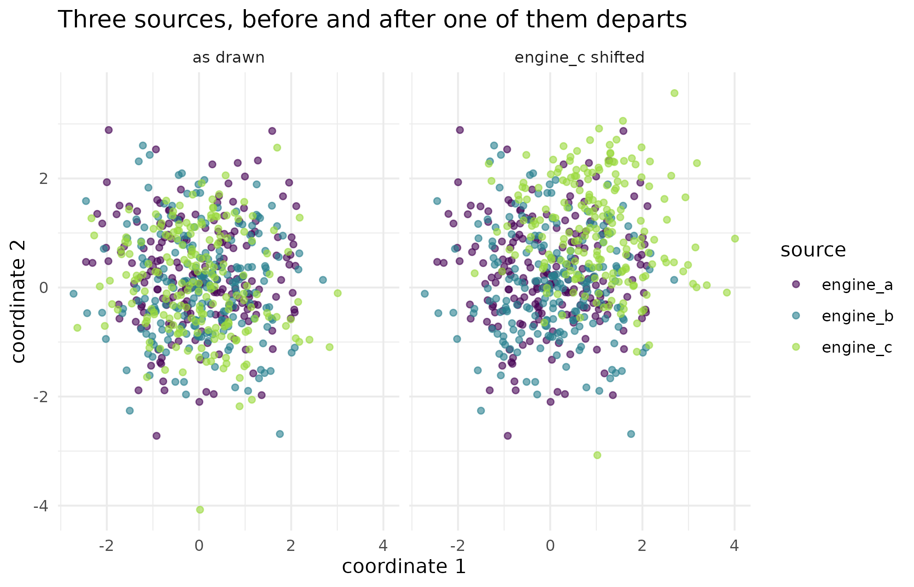

Are these draws calibrated, and do the engines agree?
Source:vignettes/kernR-calibration.Rmd
kernR-calibration.RmdWhy
A statistician has a pipeline that produces posterior draws, and no way to audit it from the inside. Three inference engines were pointed at the same model and each returned a posterior sample. I want two things before I use any of them. Do these draws actually follow the distribution they claim to represent, when all I can evaluate is an unnormalised log density? And do the three engines agree with each other, in a way that tells me which one departed if they do not? This vignette answers both, on synthetic samples where the answer is known: one goodness-of-fit test against a target density, and one joint test across several samples.
What
ksd_test() is the calibration half. It computes the
kernel Stein discrepancy between a sample and a target distribution, and
its defining property is that it needs only the target’s score
– the gradient of its log density – so the target may be unnormalised
and no reference sample is required. gaussian_score()
supplies that gradient in closed form for a multivariate normal target;
numeric_score() takes it by finite differences from any
log-density function, which is the adapter that lets an externally
supplied log-posterior evaluator be tested directly. The null is a wild
bootstrap rather than a permutation, because there is only one sample to
resample. The default base kernel is the inverse multi-quadric, which
keeps power in higher dimensions where a Gaussian kernel loses it;
kernel = "rbf" selects the Gaussian alternative.
concordance_test() is the agreement half. Its input is a
list of samples, one per source, and it asks whether all of them could
have come from one common distribution. It returns a single p-value
calibrated by one joint permutation across all sources, so it is one
test with one verdict rather than a sweep of pairwise comparisons, and
alongside it the full pairwise matrix of discrepancies, so
a rejection can be read down to the source responsible.
The two are complementary and neither substitutes for the other. Calibration compares one sample against a density; concordance compares samples against each other. Agreement among independent sources is corroborating evidence and is hard to fake; calibration against the target is the absolute check that the agreed answer is also the right one.
Do
A sample that follows its target
A synthetic sample of 200 points from a standard bivariate normal,
tested against the standard bivariate normal target that
ksd_test() assumes by default.
set.seed(1L)
x_ok <- matrix(rnorm(400L), ncol = 2L)
fit_ok <- ksd_test(x_ok, n_boot = 199L, seed = 1L)
fit_ok
#>
#> KSD Test
#>
#> Statistic: -0.00225082
#> P-value: 0.6300
#> N: 200
#> Perms: 199
#> Kernel X: imq
#>
#> Goodness-of-fit verdict
#> Stein kernel: imq (beta = -0.5)
#> Bandwidth: 1.608 (median heuristic)
#> Bootstrap: wild, B = 199
#> Surprise: 0.667 bits
#> Verdict: consistent with targetThe same sample, shifted
The identical points moved 0.7 in both coordinates, so the sample is mis-specified against the same target by a known amount.
x_bad <- x_ok + 0.7
fit_bad <- ksd_test(x_bad, n_boot = 199L, seed = 1L)
fit_bad
#>
#> KSD Test
#>
#> Statistic: 0.477917
#> P-value: 0.0050
#> N: 200
#> Perms: 199
#> Kernel X: imq
#>
#> Goodness-of-fit verdict
#> Stein kernel: imq (beta = -0.5)
#> Bandwidth: 1.608 (median heuristic)
#> Bootstrap: wild, B = 199
#> Surprise: 7.644 bits
#> Verdict: REJECT (sample inconsistent with target)A target supplied as an unnormalised log density
When no closed-form score is available, hand
numeric_score() a log density and it differentiates
numerically. Any additive normalising constant cancels in the gradient,
so an unnormalised log density is enough.
log_density <- function(z) -0.5 * rowSums(z^2)
fit_numeric <- ksd_test(
x_ok, score = numeric_score(log_density), n_boot = 199L, seed = 1L
)
fit_numeric
#>
#> KSD Test
#>
#> Statistic: -0.00225082
#> P-value: 0.6300
#> N: 200
#> Perms: 199
#> Kernel X: imq
#>
#> Goodness-of-fit verdict
#> Stein kernel: imq (beta = -0.5)
#> Bandwidth: 1.608 (median heuristic)
#> Bootstrap: wild, B = 199
#> Surprise: 0.667 bits
#> Verdict: consistent with targetThree sources that agree
Three synthetic samples of 200 points each, all drawn from the same standard bivariate normal, standing in for three inference engines pointed at one model.
set.seed(2L)
draws <- list(
engine_a = matrix(rnorm(400L), ncol = 2L),
engine_b = matrix(rnorm(400L), ncol = 2L),
engine_c = matrix(rnorm(400L), ncol = 2L)
)
fit_agree <- concordance_test(draws, n_permutations = 199L, seed = 1L)
fit_agree
#>
#> Concordance Test
#>
#> Statistic: 0.00131634
#> P-value: 0.3650
#> N: 600
#> Perms: 199
#> Kernel X: rbf (bw = 1.682)
#>
#> Concordance verdict
#> Sources: 3 (engine_a, engine_b, engine_c)
#> Verdict: concordant
#> Pairwise MMD-squared:
#> engine_a engine_b engine_c
#> engine_a 0 0.00165 0.000591
#> engine_b 0.00165 0 -0.000929
#> engine_c 0.000591 -0.000929 0One source departs
The same three samples with the third moved by 1 in both coordinates.
draws_shifted <- draws
draws_shifted$engine_c <- draws_shifted$engine_c + 1
fit_disagree <- concordance_test(
draws_shifted, n_permutations = 199L, seed = 1L
)
fit_disagree$p_value
#> [1] 0.005| engine_a | engine_b | engine_c | |
|---|---|---|---|
| engine_a | 0.0000 | 0.0016 | 0.1788 |
| engine_b | 0.0016 | 0.0000 | 0.2067 |
| engine_c | 0.1788 | 0.2067 | 0.0000 |
The figure: what the pairwise matrix is measuring
to_frame <- function(lst, state) {
do.call(rbind, lapply(names(lst), function(nm) {
data.frame(
dim1 = lst[[nm]][, 1L], dim2 = lst[[nm]][, 2L],
source = nm, state = state, stringsAsFactors = FALSE
)
}))
}
cloud_df <- rbind(
to_frame(draws, "as drawn"),
to_frame(draws_shifted, "engine_c shifted")
)
ggplot2::ggplot(
cloud_df, ggplot2::aes(x = dim1, y = dim2, colour = source)
) +
ggplot2::geom_point(alpha = 0.6, size = 1.4) +
ggplot2::facet_wrap(~state) +
ggplot2::scale_colour_viridis_d(name = "source", end = 0.85) +
ggplot2::labs(
x = "coordinate 1", y = "coordinate 2",
title = "Three sources, before and after one of them departs"
) +
ggplot2::theme_minimal()
The three sources’ samples before and after engine_c is shifted. In the left panel the three clouds are interleaved and the concordance test does not reject; in the right panel engine_c has moved as a body while the other two have not, which is the geometry the pairwise discrepancy matrix summarises to a number.
| Check | Test | Statistic | p-value | Reject at 0.05 |
|---|---|---|---|---|
| draws follow the target | ksd_test() | -0.00225 | 0.630 | FALSE |
| draws shifted by 0.7 | ksd_test() | 0.47792 | 0.005 | TRUE |
| target as an unnormalised log density | ksd_test(numeric_score) | -0.00225 | 0.630 | FALSE |
| three sources agree | concordance_test() | 0.00132 | 0.365 | FALSE |
| engine_c shifted by 1 | concordance_test() | 0.38710 | 0.005 | TRUE |
Read
The well-specified sample gives a kernel Stein discrepancy of -0.00225 with a p-value of 0.63, so the test does not reject: the sample is consistent with the target it was drawn from, which is the answer the construction demands. The statistic is a U-statistic and takes small negative values under the null, which is why a number below zero is not a sign of trouble; what matters is where it falls in its own bootstrap null. Moving the same points by 0.7 lifts it to 0.478, larger than the well-specified value by 0.48 in absolute terms and exceeded by 0 of the 199 bootstrap draws, so the p-value falls to 0.005. The numerically differentiated score reproduces the well-specified verdict: statistic -0.00225 against -0.00225 from the closed-form score, the two differing by 4.7e-15. The finite-difference gradient is an approximation, so exact agreement is not expected and the two verdicts matching is what the adapter has to deliver.
The three concordant sources give a p-value of 0.365, so the joint
test does not reject and the three may be treated as mutually
consistent. Shifting the third drops the p-value to 0.005. The pairwise
matrix localises it: the two discrepancies involving
engine_c are 0.179 and 0.207, while the
engine_a to engine_b discrepancy stays at
0.0016. The figure shows the same fact as geometry: one cloud has moved
as a body and the other two have not.
Limits
Every sample here is synthetic and drawn independently, which is the
condition both tests assume; posterior draws from a Markov chain are
autocorrelated, and neither the wild bootstrap nor the joint permutation
corrects for that, so a chain should be thinned to something close to
independent before either test is applied. The kernel Stein discrepancy
tests a sample against a stated target: it can tell you the
draws do not follow the density you supplied, and it cannot tell you the
density you supplied is the right one. A concordance verdict is
symmetric in the sources, so three engines that share a defect will
agree and pass; agreement is evidence only to the extent that the
sources are genuinely independent, and nothing in this vignette
establishes that they are. Both p-values are bounded below by
1 / (B + 1) for the bootstrap or permutation budget
B used.
What to read next
Is the calibrated model right about more than the mean?
takes the same distributional idea to the posterior-predictive question,
comparing a calibrated ensemble against held-out observations.
Getting started with kernR introduces the kernel and two-sample
machinery both tests here are built on. Scaling HSIC to large
ensembles covers the low-rank approximations that the Nystrom
variants of both tests, ksd_test_nystrom() and
concordance_test_nystrom(), are built from.
Reproduce
Seed 1 for the goodness-of-fit samples and
2 for the three sources; seed = 1L passed to
every test so the wild-bootstrap and permutation draws are fixed.
Package versions follow.
sessionInfo()
#> R version 4.6.1 (2026-06-24)
#> Platform: x86_64-pc-linux-gnu
#> Running under: Ubuntu 24.04.4 LTS
#>
#> Matrix products: default
#> BLAS: /usr/lib/x86_64-linux-gnu/openblas-pthread/libblas.so.3
#> LAPACK: /usr/lib/x86_64-linux-gnu/openblas-pthread/libopenblasp-r0.3.26.so; LAPACK version 3.12.0
#>
#> locale:
#> [1] LC_CTYPE=C.UTF-8 LC_NUMERIC=C LC_TIME=C.UTF-8
#> [4] LC_COLLATE=C.UTF-8 LC_MONETARY=C.UTF-8 LC_MESSAGES=C.UTF-8
#> [7] LC_PAPER=C.UTF-8 LC_NAME=C LC_ADDRESS=C
#> [10] LC_TELEPHONE=C LC_MEASUREMENT=C.UTF-8 LC_IDENTIFICATION=C
#>
#> time zone: UTC
#> tzcode source: system (glibc)
#>
#> attached base packages:
#> [1] stats graphics grDevices utils datasets methods base
#>
#> other attached packages:
#> [1] kernR_0.8.2
#>
#> loaded via a namespace (and not attached):
#> [1] vctrs_0.7.3 cli_3.6.6 knitr_1.51
#> [4] rlang_1.3.0 xfun_0.60 otel_0.2.0
#> [7] generics_0.1.4 S7_0.2.2 textshaping_1.0.5
#> [10] data.table_1.18.6.1 jsonlite_2.0.0 labeling_0.4.3
#> [13] glue_1.8.1 htmltools_0.5.9 PESTO_0.10.1
#> [16] ragg_1.5.2 sass_0.4.10 scales_1.4.0
#> [19] rmarkdown_2.32 grid_4.6.1 evaluate_1.0.5
#> [22] jquerylib_0.1.4 fastmap_1.2.0 yaml_2.3.12
#> [25] lifecycle_1.0.5 compiler_4.6.1 RColorBrewer_1.1-3
#> [28] fs_2.1.0 Rcpp_1.1.2 farver_2.1.2
#> [31] systemfonts_1.3.2 digest_0.6.39 viridisLite_0.4.3
#> [34] R6_2.6.1 bslib_0.12.0 withr_3.0.3
#> [37] tools_4.6.1 gtable_0.3.6 pkgdown_2.2.1
#> [40] ggplot2_4.0.3 cachem_1.1.0 desc_1.4.3